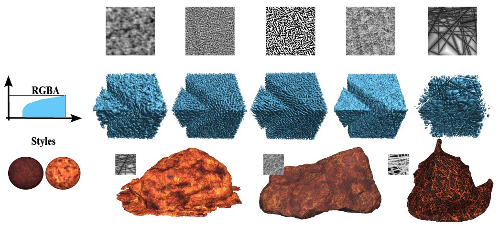
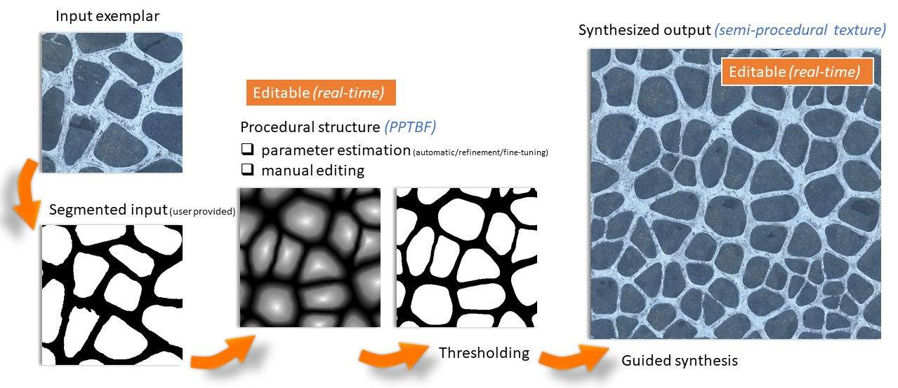
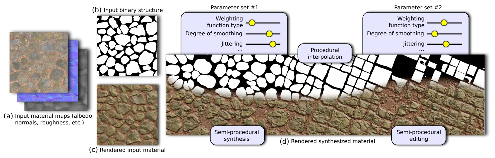

Pascal Guehl – Research Projects
Welcome to my research homepage. Here are some of the projects I’ve worked on:

Multi-Dimensional Procedural Wave Noise
ACM Transactions on Graphics (TOG)
, Vol. 44, No. 4, Article XXX, August 2025
Presented at
SIGGRAPH 2025
, August 2025, Vancouver, Canada
P. Guehl
,
R. Allègre
,
G. Gilet
,
B. Sauvage
,
M.-P. Cani
,
J.-M. Dischler

Semi-Procedural Appearance Model for Controlling and Scaling Texture and Material Synthesis
PhD Thesis Manuscript
Presented at
University of Strasbourg
, December 2022, Strasbourg, France
P. Guehl

Semi-Procedural Textures using Point Process Texture Basis Functions
Computer Graphics Forum (CGF)
, Volume 39, Issue 4, July 2020
Presented at
EGSR 2020
, June-July 2020, London, UK
P. Guehl
,
R. Allègre
,
J.-M. Dischler
,
B. Benes
,
E. Galin